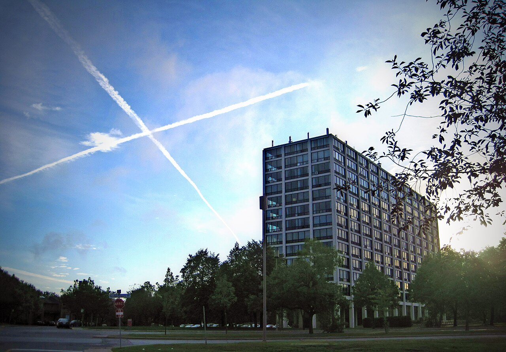
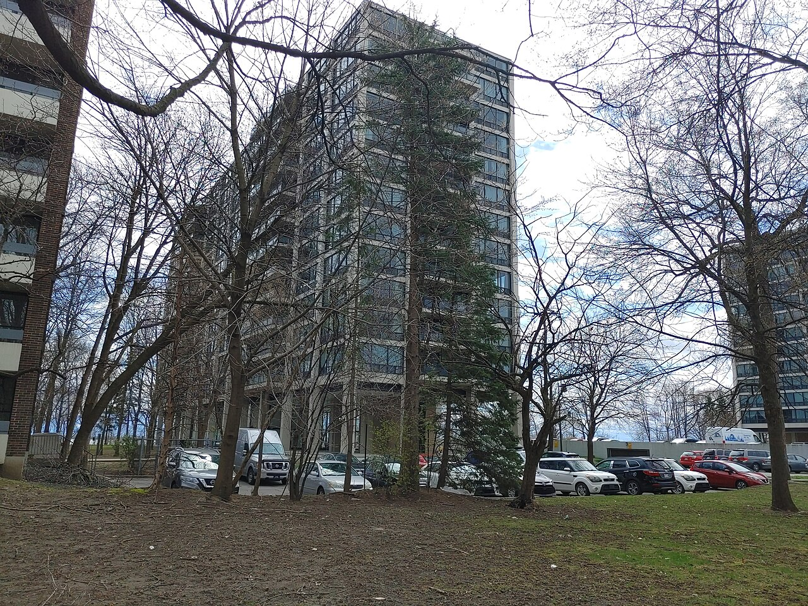

Residential tower, île des Sœurs La tour d'habitation de l'île des Sœurs

201 rue Corot, île des Sœurs, Verdun — one of the three residential slabs the 2005 evaluation attributes to Mies van der Rohe. Photograph by Commons user Niroyb, CC BY-SA 3.0. Licence: https://creativecommons.org/licenses/by-sa/3.0. File: https://commons.wikimedia.org/wiki/File:201Corot.jpg

100 rue De Gaspé, île des Sœurs, Verdun, with 200 rue De Gaspé at the left edge — the pair the cahier lists as one entry. Photograph by Commons user Jeangagnon, CC BY-SA 4.0. Licence: https://creativecommons.org/licenses/by-sa/4.0. File: https://commons.wikimedia.org/wiki/File:100_rue_De_Gaspe_-_01.jpg
Three residential slabs on an island that was farmland until 1956, set on open ground so the river stays visible between them, in a plan Mies van der Rohe worked on. The evaluation ranks the sector exceptional for the plan rather than for the buildings, and describes no building at all.
Île des Sœurs belonged to the Congrégation de Notre-Dame from 1769 and was farmed until the Sainte-Famille farm was abandoned in 1957; the island was annexed to the ville de Verdun in 1956 and the sisters left. What replaced the farm is the only planned town on this site laid out on modernist principles rather than garden-city ones — building tall in order to free the ground, the shoreline made public, pedestrians separated from cars, and the blocks turned so the river shows between them. The cahier is unusually candid that this, and not the architecture, is what it is protecting: « Ce sont ces éléments urbains qui caractérisent ce secteur. » It also records that the plan's authority outlasted its authors — « une nouvelle ville sera planifiée selon des règles strictes dont l'influence est encore ressentie et dont l'esprit supporte les orientations actuelles » — which is why the Pointe-Nord de l'Île-des-Sœurs is one of the three territories Verdun's PIIA singles out for review of new construction. Set this beside the Westmount modern tower and the Outremont apartment blocks: same decade, same idiom, three different reasons for being there.
| Tenure / plan | slab |
|---|---|
| Storeys | – |
| Roof form | flat |
| Roof pitch | 0° |
| Window proportion | – |
| Principal cladding | glass-curtain-wall |
| Roofing | – |
| Garage | – |
| Lot width | – |
| Front setback | – |
| Side setback | – |
| Front yard green | – |
What Ville de Montréal says about this type
- « La planification urbaine de ce secteur de l'île des Sœurs a été élaborée en collaboration avec l'architecte de réputation internationale Ludwig Mies van der Rohe. On y retrouve aussi trois tours d'habitation de l'architecte ainsi que la station d'essence de la pétrolière Esso. Van der Rohe est aussi l'auteur, à Montréal, du complexe Westmount Square et du Centre Saidye Bronfman. » (21.E.6)
- « En 1956, l'île des Sœurs jusque là exclusivement agricole est définitivement annexée à la ville de Verdun. Les Sœurs de la Congrégation de Notre-Dame quittent les lieux. » (ch. 2, Historique)
- « Les années 1960 transformeront l'île, jusqu'alors vouée à l'agriculture, en un vaste projet de développement urbain planifié. Sous l'influence de l'architecte Mies van de Rohe et d'urbanistes, une nouvelle ville sera planifiée selon des règles strictes dont l'influence est encore ressentie et dont l'esprit supporte les orientations actuelles. » (§3.1, Mise en situation — the source's own spelling « van de Rohe » is reproduced here and corrected everywhere else on this page)
- Free-standing on open ground, oriented so that views through to the river are kept open. Building tall is the means, not the end — the plan builds up in order to free ground for parks and community space.
- Pedestrian and vehicle circulation separated; the shoreline developed as public space.
- « La planification urbaine de l'île des Sœurs repose sur la construction en hauteur dégageant de plus grands espaces au sol (parcs, espaces communautaires, etc.), l'aménagement public de la berge, une séparation entre la circulation piétonne et la circulation automobile, et une orientation des bâtiments permettant les percées visuelles sur le fleuve. Ce sont ces éléments urbains qui caractérisent ce secteur. » (21.E.6)
- Slab blocks. Three of them by Mies van der Rohe, at 100 and 200 rue De Gaspé and 201 rue Corot.
- Not described by the cahier, which treats the sector as an urban-planning object and says so — « Ce sont ces éléments urbains qui caractérisent ce secteur. »
- –
- –
The thinnest record on this page, and deliberately so. The Évaluation characterises 21.E.6 as an urban-planning proposition and describes no building: it gives no storey count, no structural or cladding description, no dates and no dimensions for the three towers. Storeys, window proportion, openings and materials, garage and setbacks are therefore null or empty. `principal_cladding` is the one field entered from the photographs rather than from the text — continuous glazed bands with spandrel panels, visible in both — and should be read as observation, not source. What the cahier does give with certainty is identity and address, from its own list of immeubles de valeur patrimoniale exceptionnelle — « 201, rue Corot — Habitations multiples – Mies van der Rohe » and « 100 et 200, rue De Gaspé — Habitations multiples – Mies van der Rohe » — and those are recorded as example_addresses. The filling station at 201 rue Berlioz is in related_buildings, not here, because it is not housing.
Same word elsewhere
- Modernist residential tower (Westmount)
Same form elsewhere
- Modernist building (Lévis)
- Modernist residential tower (Westmount)
Same period elsewhere
- Family M houses (models M1–M11), regionalist neo-vernacular (Arvida (borough of Jonquière, Saguenay))
- Family F semi-detached houses (models F1–F18) (Arvida (borough of Jonquière, Saguenay))
- Families P, Q, S and T (paired and single models along boulevard du Saguenay and rues Powell, Neilson, Berthier, Parks, Joule) (Arvida (borough of Jonquière, Saguenay))
- Family R row houses (models R2–R4) (Arvida (borough of Jonquière, Saguenay))
- Families E, G, H, J, K, L, N, Y and Z (Arvida (borough of Jonquière, Saguenay))
- Wartime Housing Ltd. houses (Arvida (borough of Jonquière, Saguenay))
- Boomtown building (Charlesbourg (Trait-Carré))
- Cubic house (Four Square) (Charlesbourg (Trait-Carré))
- Industrial vernacular house (Charlesbourg (Trait-Carré))
- Vernacular cottage (Charlesbourg (Trait-Carré))
- Post-war residence (bungalow) (Charlesbourg (Trait-Carré))
- First-generation North American bungalow (bungalow nord-américain de première génération) (Gatineau)
- CIP executive's house (maison de cadre de la CIP) (Gatineau)
- English-revival stone house (Hampstead)
- Postwar detached house (Hampstead)
- Contemporary rebuild (Hampstead)
- Modernism (Île d'Orléans)
- Québec regionalism (Île d'Orléans)
- Beaux-Arts house (Lévis)
- Boomtown house (Lévis)
- Cubic house (maison cubique) (Lévis)
- Flat-roofed house (Lévis)
- Arts & Crafts house (Arts & métiers) (Lévis)
- Wartime housing dwelling (Lévis)
- Modernist building (Lévis)
- Brick bungalow of the 1950s Mercier developments (Mercier–Hochelaga-Maisonneuve (borough of Montréal))
- Veterans' house, to the Wartime Housing Limited model (Mercier–Hochelaga-Maisonneuve (borough of Montréal))
- Canadian House (Town of Mount Royal)
- New England House (Town of Mount Royal)
- New England Apartment Block (Town of Mount Royal)
- Georgian House (Town of Mount Royal)
- English Manor House (Town of Mount Royal)
- Bungalow (Town of Mount Royal)
- Cottage (Town of Mount Royal)
- Split-Level (Town of Mount Royal)
- Prairie House (Town of Mount Royal)
- Modern Apartment Block (Town of Mount Royal)
- Opulent detached residence (Outremont (borough of Montréal))
- Apartment building (conciergerie) (Outremont (borough of Montréal))
- Modern house on the flank (Outremont (borough of Montréal))
- Apartment block without courtyard (Le Plateau-Mont-Royal (borough of Montréal))
- Apartment block with courtyard (Le Plateau-Mont-Royal (borough of Montréal))
- Small apartment building (Le Plateau-Mont-Royal (borough of Montréal))
- Apartment block with a central stairwell (Québec City)
- Arts and Crafts house (Québec City)
- Bungalow (Québec City)
- Camp and villégiature chalet (Québec City)
- Dutch Colonial Revival house (Québec City)
- International Style house (residential) (Québec City)
- Neo-Georgian house (Québec City)
- Prairie house (Frank Lloyd Wright inspiration) (Québec City)
- Wartime Housing house (Cape Cod) (Québec City)
- Maison shoebox (Rosemont–La Petite-Patrie (borough of Montréal))
- Duplex with interior stair and paired entrances (Rosemont–La Petite-Patrie (borough of Montréal))
- Detached house of the Cité-Jardin du Tricentenaire (Rosemont–La Petite-Patrie (borough of Montréal))
- Semi-detached duplex with rear garage, Art déco manner (Rosemont–La Petite-Patrie (borough of Montréal))
- Bungalow (Rosemont–La Petite-Patrie (borough of Montréal))
- The "King Cottage" (Saint-Lambert)
- The modern house (including the bungalow) (Saint-Lambert)
- Boomtown house (Le Sud-Ouest (Montréal))
- Duplex with interior stair (Le Sud-Ouest (Montréal))
- Three-storey duplex (Le Sud-Ouest (Montréal))
- Triplex with interior stair (Le Sud-Ouest (Montréal))
- Urban house (Le Sud-Ouest (Montréal))
- Apartment house (Le Sud-Ouest (Montréal))
- Duplex with exterior stair (Le Sud-Ouest (Montréal))
- Multiplex (Le Sud-Ouest (Montréal))
- Raised duplex (Le Sud-Ouest (Montréal))
- Triplex with exterior stair (Le Sud-Ouest (Montréal))
- Apartment building (lift-served) (Le Sud-Ouest (Montréal))
- Conciergerie (walk-up apartment block) (Le Sud-Ouest (Montréal))
- Town house (post-1960 project housing) (Le Sud-Ouest (Montréal))
- Veterans' house (Le Sud-Ouest (Montréal))
- Upper-district company house (Somerville, 1925–1950) (Témiscaming)
- Boomtown house (Trois-Rivières)
- Immeuble à logements — the plex of superposed flats (Trois-Rivières)
- Cubic house (Four-square) (Trois-Rivières)
- Arts & Crafts house (Trois-Rivières)
- Shoebox of the early 20th century (Villeray–Saint-Michel–Parc-Extension)
- Boomtown house (Villeray–Saint-Michel–Parc-Extension)
- Plex of the early 20th century (Villeray–Saint-Michel–Parc-Extension)
- Apartment building of the early 20th century — the conciergerie (Villeray–Saint-Michel–Parc-Extension)
- Shoebox of the mid-20th century (Villeray–Saint-Michel–Parc-Extension)
- Post-war house (Villeray–Saint-Michel–Parc-Extension)
- Post-war semi-detached house (Villeray–Saint-Michel–Parc-Extension)
- Plex of the mid-20th century (Villeray–Saint-Michel–Parc-Extension)
- Apartment building of the mid-20th century — the walk-up (Villeray–Saint-Michel–Parc-Extension)
- Bungalow (Villeray–Saint-Michel–Parc-Extension)
- Plex of the second half of the 20th century — the « plex italien » (Villeray–Saint-Michel–Parc-Extension)
- Apartment building of the second half of the 20th century (Villeray–Saint-Michel–Parc-Extension)
- Tudor Revival house (Westmount)
- Arts and Crafts semi-detached house (Westmount)
- Interwar apartment house (Westmount)
- Modernist residential tower (Westmount)
Same style elsewhere
- Modernism (Île d'Orléans)
- Modernist building (Lévis)
- Modern Apartment Block (Town of Mount Royal)
- Modern house on the flank (Outremont (borough of Montréal))
- Small apartment building (Le Plateau-Mont-Royal (borough of Montréal))
- International Style house (residential) (Québec City)
- The modern house (including the bungalow) (Saint-Lambert)
- Apartment building (lift-served) (Le Sud-Ouest (Montréal))
- Conciergerie (walk-up apartment block) (Le Sud-Ouest (Montréal))
- Apartment building of the second half of the 20th century (Villeray–Saint-Michel–Parc-Extension)
- Modernist residential tower (Westmount)